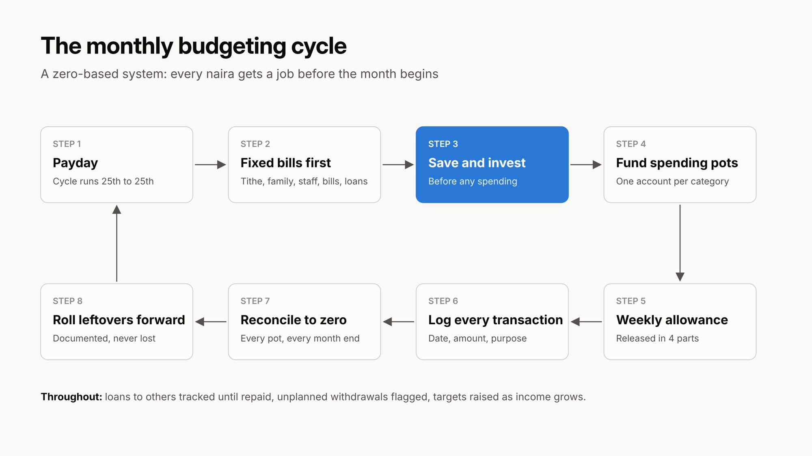
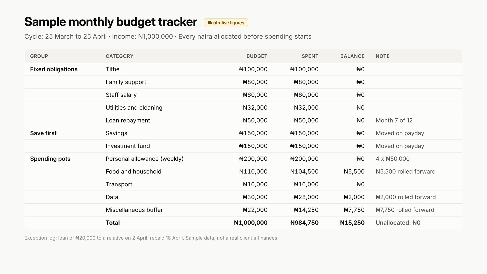

Case study · Financial administration
From debt to a ₦6.2M portfolio
Executive Assistant (Financial Administration) to a tech founder · May 2025 to present
In 18 months, I took a busy founder from living paycheck to paycheck to cleared debts, a ₦6.2M savings and investment portfolio, and a ₦1.5M rent payment funded entirely from savings.

The challenge
In May 2025, the founder had no savings and no investments. Most of his salary went to repaying money he had borrowed.
- He was spending more than he earned and borrowing to cover the gap
- He could not account for where his money went each month
- There was no budget, no spending categories and no savings plan
- He was too busy to fix it himself, and finance was not his strength
What I built
I designed a zero-based monthly budget, where every naira of income is given a job before the month starts. I set the savings targets and spending categories myself and ran the system every month.

- A fixed monthly cycle. Each budget runs from the 25th to the 25th, matching his payday, so money is planned the moment it arrives.
- Fixed obligations first. Tithe, family support, staff salary, utilities, cleaning and loan repayments are paid on schedule each cycle.
- Savings before spending. A set amount moves into savings and an investment fund at the start of every cycle, before any personal spending.
- Separate spending pots. Personal allowance, food and household, transport, data and two miscellaneous buffers each get a fixed budget, held in separate accounts so balances never mix.
- Weekly allowance. His personal spending money is released weekly, not monthly, so it lasts the whole cycle.
- Every transaction recorded. Each payment is logged with its date, amount and purpose, and every pot is reconciled to zero at month end.
- Leftovers rolled forward, not lost. Unspent balances are documented and carried into the next cycle with a note on where they went.
- Exceptions flagged. Loans to other people are tracked until repaid, and any unplanned withdrawal from savings is recorded and raised.
- The plan grows with income. When his salary rose in May 2026, I raised the monthly savings target from ₦300k to as much as ₦735k.
Results
By November 2026, he had cleared his debts (apart from one scheduled phone loan) and built a ₦6.2M portfolio, up 282% in a year.
| Measure | Before (May 2025) | After (Nov 2026) |
|---|---|---|
| Savings and investments | None | ₦6.24M portfolio |
| Debt | Salary going to loan repayments | Cleared, except one scheduled phone loan |
| Monthly saving | Nothing set aside | ₦300k to ₦735k every month, about 30% of income |
| Consistency | No plan | 16 of 16 monthly targets met |
| Total set aside | ₦0 | ₦6.9M |
| Returns earned | ₦0 | Over ₦730k in interest and returns |
| Large expenses | Covered by borrowing | ₦1.5M rent paid entirely from savings |
| Record accuracy | Could not say where money went | Tracker matches the investment platform balance to the naira |

What this shows
- Financial judgment: I diagnosed the problem, set the targets and designed the structure without being told what to do.
- Discipline and consistency: the system ran every month for 16 months with no missed savings target.
- Accurate records: every transaction is traceable, and the totals reconcile with the investment platform to the naira.
- Risk awareness: loans, unplanned withdrawals and exceptions are flagged and tracked, a habit from my years in fraud and payments.
- Discretion: I handle a founder's most private information with full confidentiality. Figures here are shared with his written consent, and he is not named.

A sample of the tracker format, using illustrative figures rather than the client's.